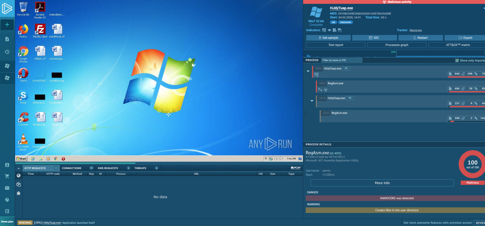

22.3.1 Superficie de ataque
Es necesario recordar que una vulnerabilidad es una debilidad en un sistema o en su diseño que podría ser aprovechada por una amenaza. Una superficie de ataque es la suma total de las vulnerabilidades presentes en un sistema determinado a las que puede acceder un atacante. La superficie de ataque puede consistir en puertos abiertos en servidores o hosts, software que se ejecuta en servidores conectados a internet, protocolos de redes inalámbricas e incluso usuarios.
Como se ve en la figura, la superficie de ataque continúa expandiéndose. Hay más dispositivos que se conectan a las redes mediante dispositivos IoT y dispositivos BYOD Gran parte del tráfico de red ahora ocurre entre dispositivos y algún lugar en la nube. El uso de dispositivos móviles sigue en aumento. Todas estas tendencias contribuyen a prever que el tráfico IP global se triplicará en los próximos cinco años.
El instituto SANS describe tres componentes de la superficie de ataque:
Superficie de ataque de la red - El ataque aprovecha las vulnerabilidades en las redes. Esto puede incluir protocolos de red cableada e inalámbrica convencionales, así como otros protocolos inalámbricos usados por teléfonos inteligentes o dispositivos de IoT. Los ataques a la red también aprovechan las vulnerabilidades de las capas de red y transporte.
Superficie de Ataque de Software - El ataque se realiza aprovechando vulnerabilidades en aplicaciones de software web, en la nube o basada en hosts.
Superficie de Ataque Humana - El ataque aprovecha las debilidades en el comportamiento del usuario. Estos ataques incluyen ingeniería social, comportamiento malicioso de recursos internos de confianza y errores de los usuarios.
Una Superficie de Ataque en Expansión

22.3.2 Listas negras y Listas blancas de aplicaciones
Una manera de disminuir la superficie de ataque es limitar el acceso a posibles amenazas mediante la creación de listas de aplicaciones prohibidas. Estas listas se conocen como “listas negras."
Las listas negras de aplicaciones pueden determinar qué aplicaciones de usuario no tienen permitido ejecutarse en una computadora. Del mismo modo, las listas blancas pueden especificar los programas que sí se pueden ejecutar, como se ve en la figura. De esta manera, se puede evitar que las aplicaciones vulnerables conocidas creen vulnerabilidades en los hosts de la red.
Las listas blancas se crean según un estándar de referencia creado por una organización. Este estándar de referencia define un nivel de riesgo aceptado y los componentes del entorno que contribuyen a ese nivel de riesgo. El software que no se encuentre en la lista blanca puede aumentar el riesgo al violar el estándar de referencia de seguridad establecido.
Lista de aplicaciones bloqueadas y lista de permitidas

La figura muestra las configuraciones de listas negras y listas blancas de Windows Local Group Policy Editor.
Los sitios web también pueden incluirse en listas blancas y negras. Estas listas negras se pueden crear manualmente o se pueden obtener de varios servicios de seguridad. Los servicios de seguridad pueden actualizar las listas negras constantemente y distribuirlas a firewalls y otros sistemas de seguridad que las usen. El sistema de administración de seguridad Cisco Firepower es un ejemplo de un sistema que puede tener acceso al servicio de inteligencia de seguridad de Cisco Talos para obtener listas negras. Luego, estas listas pueden distribuirse a los dispositivos de seguridad dentro de una red empresarial.
Busque en Internet The Spamhaus Project, que es un ejemplo de un servicio gratuito de lista negra.

22.3.3 Sandboxing basado en sistema
Sandboxing es una técnica que permite analizar y ejecutar en un entorno seguro los archivos sospechosos. Los sandbox de análisis de malware automatizado ofrecen herramientas que analizan el comportamiento del malware. Estas herramientas observan los efectos de ejecutar malware desconocido para poder determinar el comportamiento del malware y usar la información para crear defensas contra él.
Como se mencionó anteriormente, el malware polimorfo cambia con frecuencia y aparece nuevo malware regularmente. Un perímetro extremadamente sólido y la implementación de sistemas de seguridad basados en hosts no evitan totalmente el ingreso de malware. Los HIDS y otros sistemas de detección pueden crear alertas sobre malware sospechoso que podría haber ingresado en la red y haberse ejecutado en un host. Algunos sistemas, como Cisco AMP, pueden seguir la trayectoria de un archivo a través de la red y pueden “retroceder” los eventos de la red para obtener una copia del archivo descargado. Luego, es posible ejecutar este archivo en un sandbox (como Cisco Threat Grid Glovebox) y que el sistema documente las actividades del archivo. Después, esta información puede utilizarse para crear firmas que impidan que el archivo vuelva a ingresar en la red. La información también puede utilizarse para crear reglas de detección y reproducciones automatizadas que identifiquen otros sistemas infectados.
Cuckoo Sandbox es un sistema sandbox gratuito para el análisis de malware. Se puede ejecutar localmente y usarlo para analizar muestras de malware. También existe una serie de sandbox públicos en línea. Estos servicios permiten la carga de muestras de malware para su análisis. Algunos de estos servicios son VirusTotal, Joe Sandbox y CrowdStrike Falcon Sandbox.
Una herramienta online interesante es ANY.RUN, la cual se muestra en la figura. Ofrece la posibilidad de cargar una muestra de malware para su análisis como cualquier sandbox online. Sin embargo, ofrece una funcionalidad de generación de informes interactivos muy enriquecedora que está llena de detalles sobre la muestra de malware. ANY.RUN ejecuta el malware y analiza una serie de capturas de pantalla del malware si tiene elementos interactivos que se muestran en la pantalla del equipo sandbox. Puede ver muestras públicas enviadas por los usuarios de ANY.RUN para investigar información sobre malware recién descubierto o malware que está circulando en Internet. Los informes incluyen la actividad de red e Internet del malware, incluidas las solicitudes HTTP y las consultas DNS. Los archivos que se ejecutan como parte del proceso de malware se muestran y califican como amenaza. Los detalles están disponibles para los archivos, incluidos varios valores hash, vistas hexadecimales y ASCII del contenido del archivo, y los cambios del sistema realizados por los archivos. Además, también se muestran la identificación de indicadores de peligro, como los hashes de archivos de malware, las solicitudes DNS y las conexiones IP que realiza el malware. Finalmente, las tácticas tomadas por el malware se asignan a la MITRE ATT&CK Matrix con cada táctica vinculada a los detalles en el sitio web de MITRE.

22.3.4 Video - Usando una Sandbox para Ejecutar Malware
Reproducir el video para ver una demostración de uso del entorno sandbox para iniciar y analizar un ataque de malware.